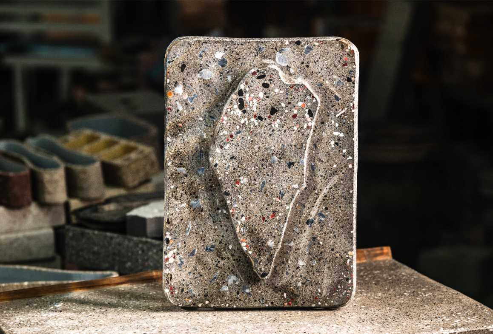
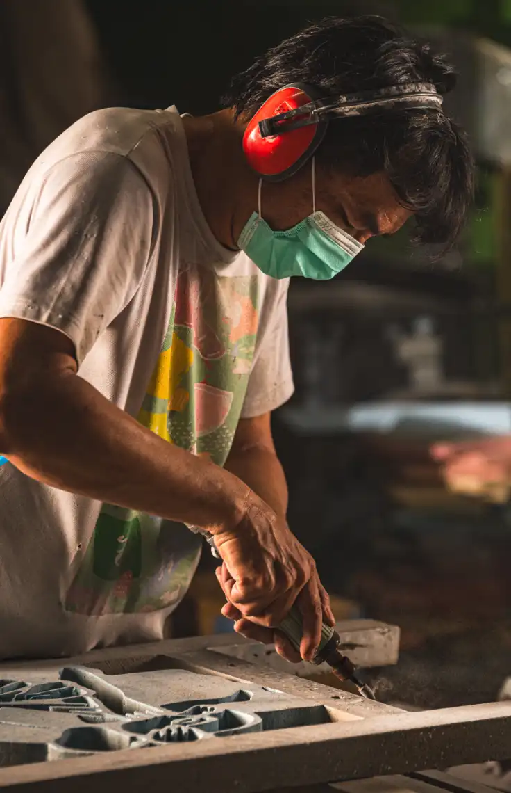
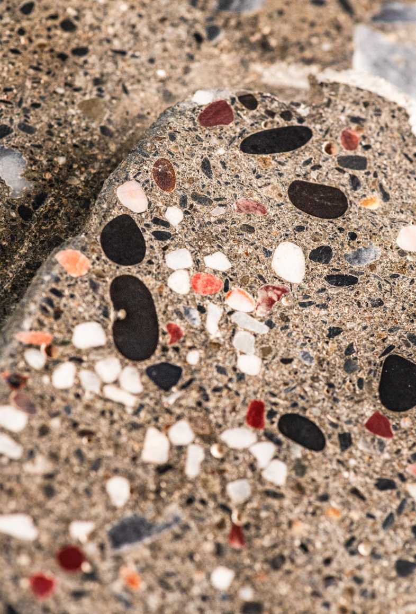
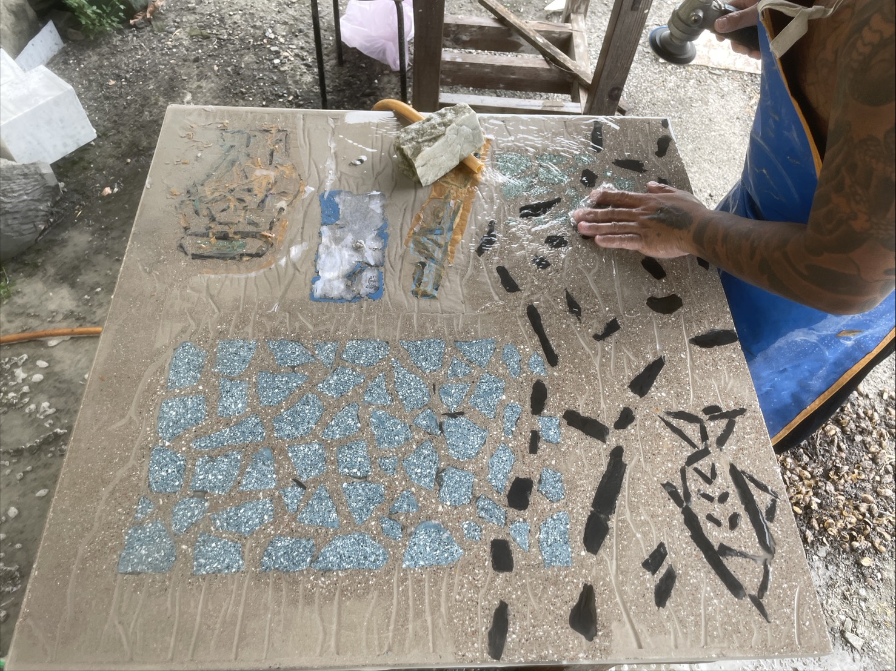
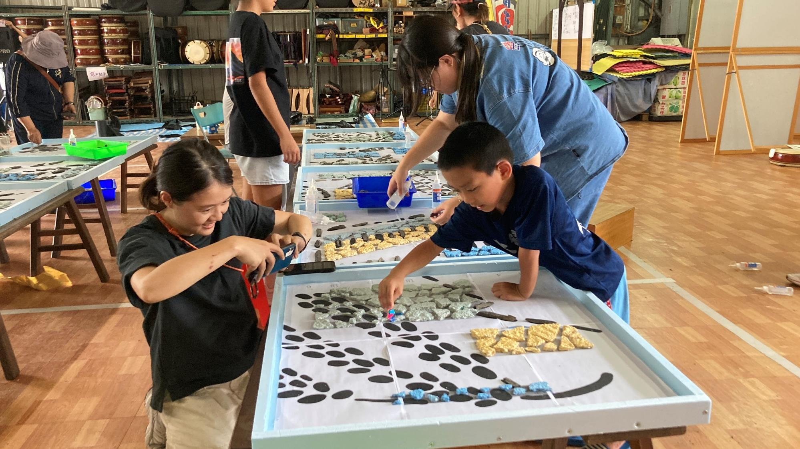
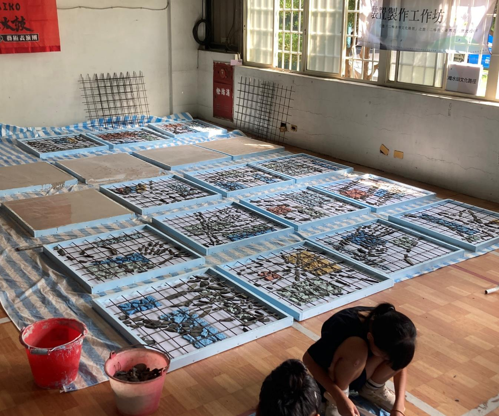
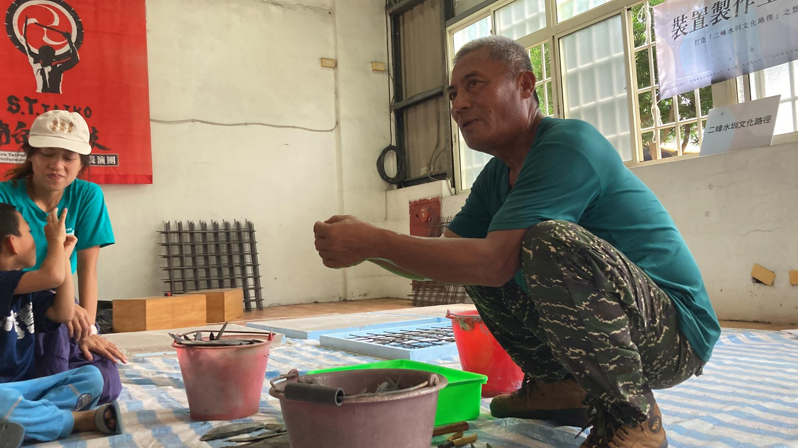
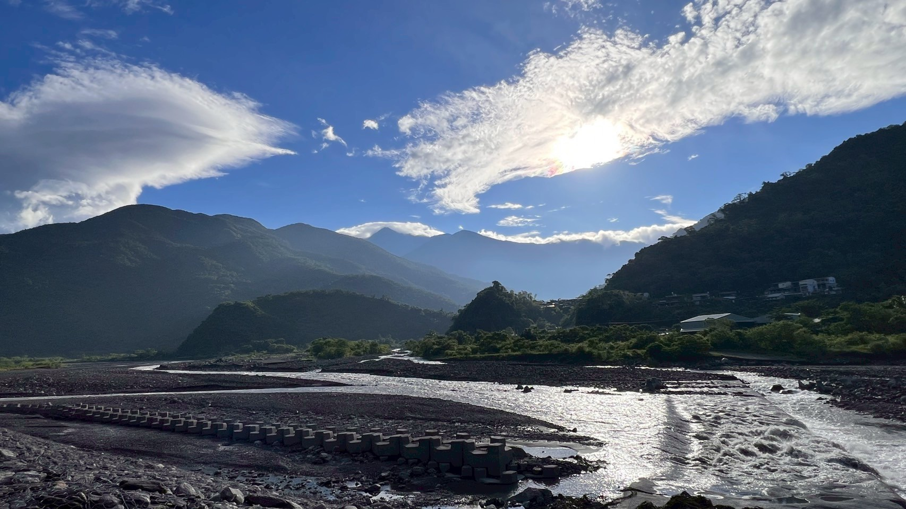

Craftsman · 職人精神
台灣最溫柔的人，
做出最堅硬的作品。

Rovi Lee · Studio Portrait
土木博士，做家具。從橋梁檢測、921 生命線經驗到混凝土創作，Rovi Lee 把安全、材料、力學與系統關係，帶進每一件作品。
廢棄物不是廢物，是放錯地方的資源。我們把台灣的營建廢棄物與地方記憶，升級轉化為家具、音響與藝術裝置。
了解品牌故事 →
土木博士，做家具。從橋梁檢測、921 生命線經驗到混凝土創作，Rovi Lee 把安全、材料、力學與系統關係，帶進每一件作品。
廢棄物不是廢物，是放錯地方的資源。我們把台灣的營建廢棄物與地方記憶，升級轉化為家具、音響與藝術裝置。
了解品牌故事 →
我們不把再生材料磨成看不見的粉末，而是讓裂縫、顆粒、色塊保留下來。每一件都能看見它曾經作為建材、牆面或土地的一部分。

文字、圖騰、廟宇紋路、家族符號、婚禮誓詞——任何有意義的東西，都可以刻進去。

廢料來源、再生佔比、去化重量與作品編號，都能整理成企業採購與永續報告可引用的文件。
每件附材料溯源證書，符合 SDG 12.5，直接引用於年報。
工作坊進企業，員工手作，ESG 減碳戰報即日產出。
遊戲地圖冠名，玩家互動數量化進 ESG 報告。

適合節慶、企業禮贈、活動伴手禮。比起一次性的包裝，這些物件會被放在桌上、窗邊、工作室裡，慢慢變成日常的一部分。

在竹塘正式啟動以前，Rovi 老師已於屏東來義完成一個完整前例：地方故事調查、居民共同設計紋路、使用無機再生粒料與在地材料，最後讓桌子回到公共活動與餐會現場。




不管是情人節、企業採購、ESG 方案、或你只是想送某個人一件永遠不會壞的東西——找我們聊。